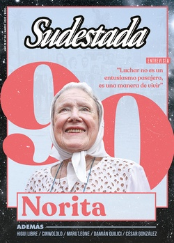

Buscar
Cien días
Cuando esta revista llegue a tus ojos, se cumplirán los primeros cien días del gobierno de Alberto Fernández. Y algunas cosas merecen ser pensadas, analizadas y discutidas.
Edición N° 160
Sudestada Nº 160 - Marzo 2020
Revista bimensual
Comprar edición impresaSumario
- Cien días
- Norita. 90 años de lucha
- Efecto Trueno
- La nave que va al infierno
- Machirulo
- Orillas. El libro de poesía de CinWololo
- Maru Leone. Dos textos
- Higui y la legítima autodefensa
- Las músicas pelean por más derechos en los escenarios
- Los cuerpos y las redes sociales
- ¿El amor es un algoritmo?
- El final de una Aurora
- El “Acuerdo del Siglo” para destruir a Palestina
Compartir Articulo
Cuando esta revista llegue a tus ojos, se cumplirán los primeros cien días del gobierno de Alberto Fernández. Y algunas cosas merecen ser pensadas, analizadas y discutidas. En primer lugar, habrá que señalar lo que queda atrás: cuatro años de la gestión más antipopular y siniestra de la democracia argentina; un proyecto de patrones, estancieros y gerentes que llegó a tener la manija del Estado en sus manos, que empujó a la pobreza, la miseria y el hambre a millones de laburantes y que planificó una estrategia para quitarle el plato de comida a nuestros pibes y pibas para beneficiar la timba financiera y multiplicar las ganancias de corporaciones. Ese fue el punto de partida para el nuevo gobierno, con un plus que vale subrayar: un endeudamiento que cobra la dimensión de una estafa gigantesca. Para los recién llegados a la Casa Rosada, el primer punto fue el dilema de la deuda externa y su decisión fue comprometerse con el pago. Esta medida generó la primera controversia profunda en el campo popular: de un lado, los que pensamos que la deuda es ilegítima, impagable e ilegal, que de ningún modo puede ser pagada a costa del hambre de las futuras generaciones; y del otro, aquellos que piensan que los compromisos deben ser asumidos para evitar males mayores. ¿Se puede realmente pensar de forma soberana una gestión política con el condicionante del pago de una deuda "insostenible", adjetivo elegido por el propio FMI para definirla? ¿Se puede negociar con la usura multinacional de los organismos de crédito, los mismos que dejaron en todo el mundo un tendal de hambre y desastre en cada sitio donde negociaron sus acuerdos e impusieron sus modelos de ajuste?
La segunda línea que distanció a propios y extraños fue el manejo de la crisis económica. Ante el desastre generado por el macrismo, el nuevo gobierno asumió decisiones de corto plazo para mitigar un elemento central en la vida cotidiana de millones: el hambre. Hoy, el hambre debería ser el punto principal en la agenda del gobierno. En ese sentido, la implementación de la tarjeta alimentaria fue un recurso de apuro que coincidió con el ajuste a las jubilaciones, otra decisión que despertó rechazo y sembró desconcierto en unos y desengaño en otros...
(La nota completa en la edición gráfica de Sudestada... ¿Por qué publicamos apenas un fragmento de cada artículo? Porque la subsistencia de Sudestada depende en un 100 por ciento de la venta y de la confianza con sus lectores, no recibimos subsidios ni pauta alguna, de modo que la venta directa garantiza que nuestra publicación siga en las calles. Gracias por comprender)
Comentarios

Sudestada
El colectivo de Revista Sudestada esta integrado por Ignacio Portela, Hugo Montero, Walter Marini, Leandro Albani, Martín Latorraca, Pablo Fernández y Repo Bandini.
Articulos más vistos


LIBRERÍA SUDESTADA

Colección infantil

Distribuidora de Libros

Suscripción

Sudestada en URUGUAY

Otros articulos de esta edición
Los cuerpos y las redes sociales
Una modelo publicó en su Instagram una foto de ella en donde se la nota muy delgada y una fan ...
 Adelanto
Adelanto
Orillas. El libro de poesía de CinWololo
Resistí, volá. Encendé, viajá, soñá. Es tanto pero tanto lo que llevás en el pecho que cada latido es una ...
Machirulo
Las letras del tango canción son muchas. Diez mil, quince mil, nadie sabe con exactitud. Hay quienes dicen que hay, ...
 Nota de Tapa
Nota de Tapa
Norita. 90 años de lucha
Referenta ineludible de la pelea por los derechos humanos, abanderada de la resistencia de trabajadores, pueblos originarios y de los ...
 Postales
Postales
¿El amor es un algoritmo?
Goce, amor libre, efímero, deseante. La revolución de los vínculos en tiempos de cuestionamiento y búsqueda de nuevas afectividades se ...
La nave que va al infierno
Emperadores de la calle, sin riquezas, sin corona, sin súbditos, sin abundancia, rebalsando indigencia-según-datos-oficiales, pero intactos de orgullo.